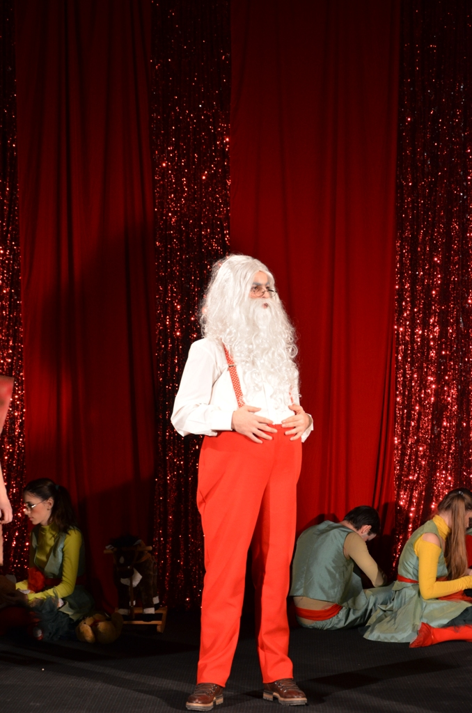
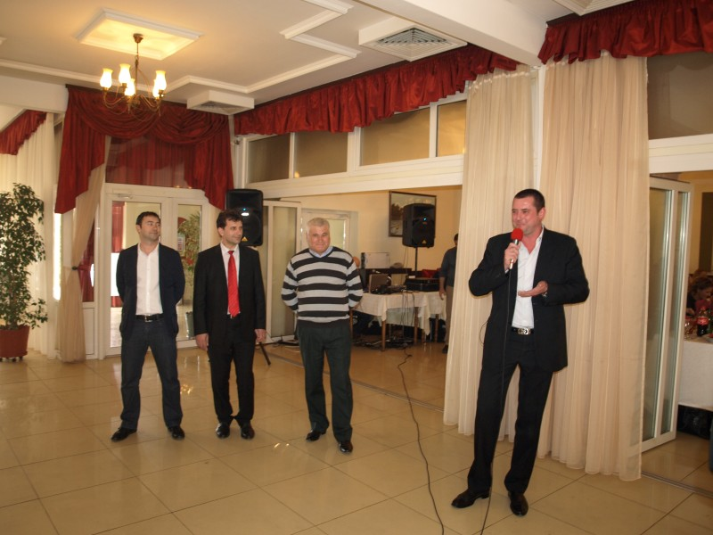
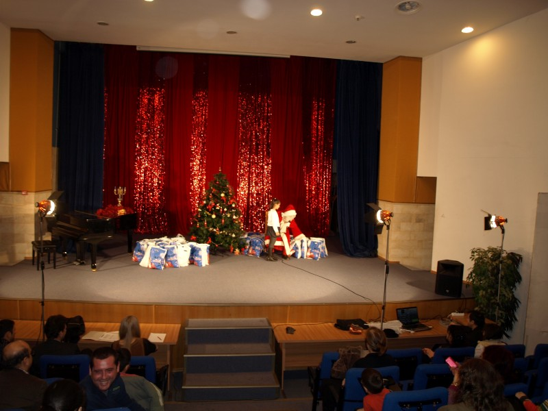
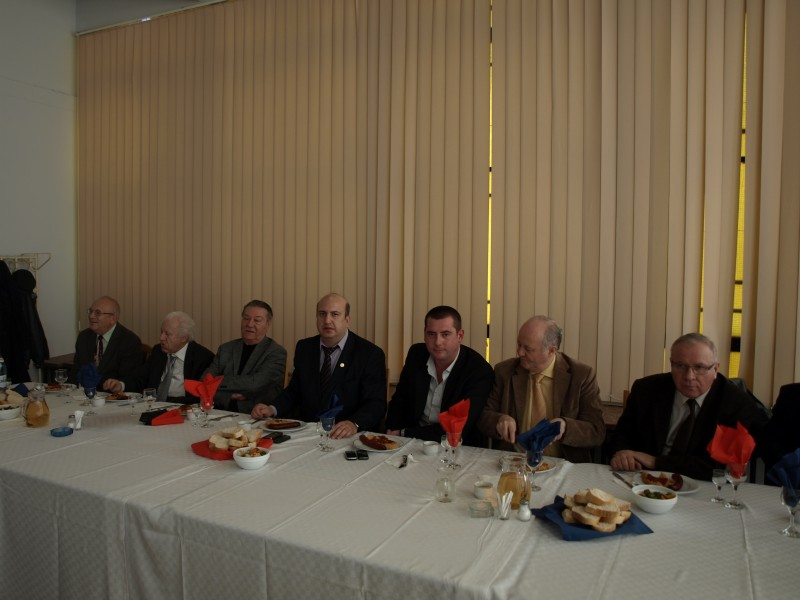
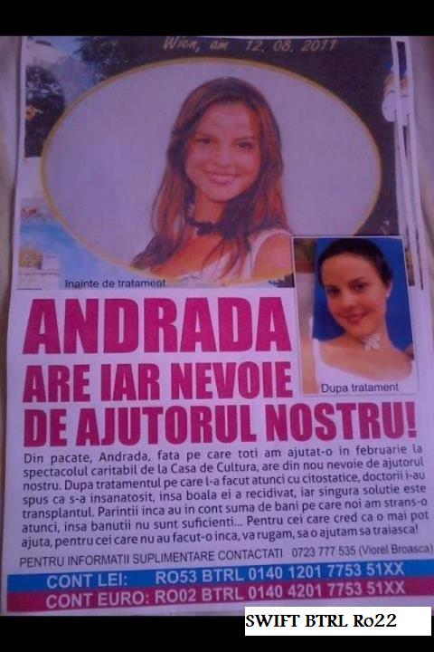

 2014-12-24Evenimente Spectacol de Crăciun oferit de Sindicatul UOC, decembrie 2014 Deschide evenimentul
 2013-04-01Evenimente Masă festivă pentru femeile din Universitate, cu ocazia zilei de 8 Martie Deschide evenimentul
 2013-01-26Evenimente Serbare de Crăciun pentru copiii membrilor de Sindicat Deschide evenimentul
 2013-01-25Evenimente Întâlnirea profesorilor Universității „Ovidius” cu ocazia Zilei Unirii, 24 ianuarie 2013 Deschide evenimentul
 2012-11-07Evenimente Sindicatul Universității Ovidius din Constanța demarează campania de strângere de fonduri, necesare studentei Broască Lavinia din Universitatea Ovidius Constanța, Facultatea de Farmacie, bolnavă de leucemie, pentru realizarea unui transplant. Deschide evenimentul